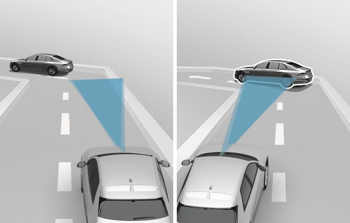
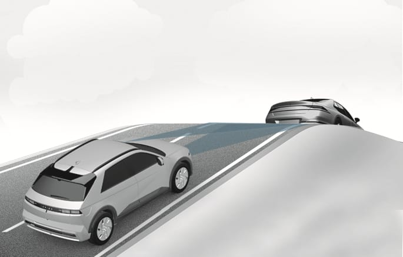
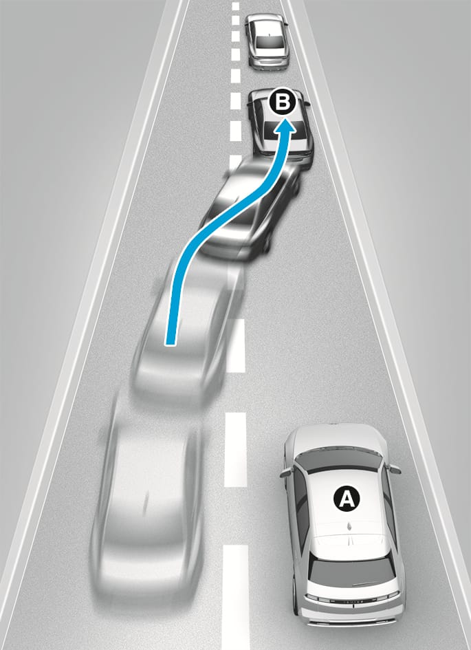
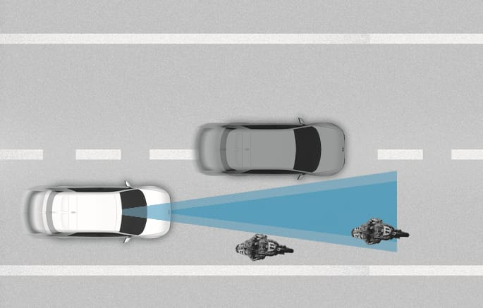
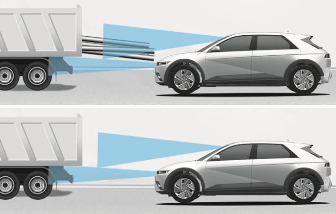
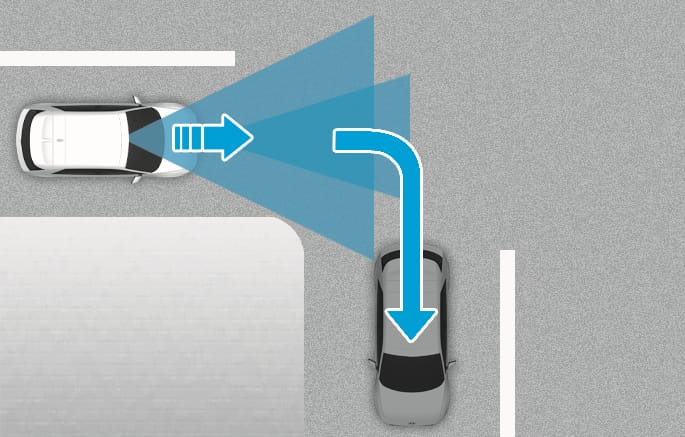
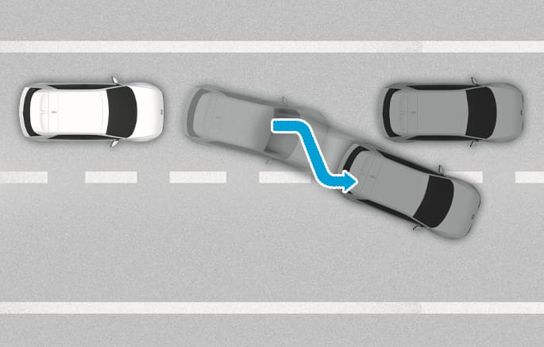
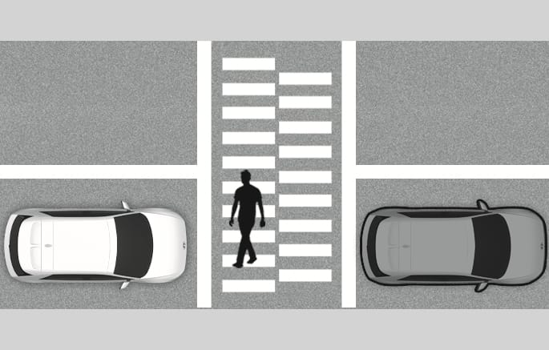

스마트 크루즈 컨트롤 이상 및 제한 사항
스마트 크루즈 컨트롤에 이상이 있거나 센서의 가림이 발생하면 클러스터 등에 경고문이 표시되고 통합 (
-
경고 내용은 클러스터 유틸리티 정보 뷰의 서비스 메시지에서 확인할 수 있습니다.
-
센서 앞에 이물질이 있는 경우, 제거하면 스마트 크루즈 컨트롤이 다시 정상적으로 작동합니다. 이물질을 제거해도 통합 (
X ) 경고등이 계속 켜져 있으면 당사 직영 하이테크센터나 블루핸즈에서 점검을 받으십시오.
-
인식 센서 가림 경고문이 표시되지 않거나 경고등이 켜지지 않더라도 스마트 크루즈 컨트롤이 정상적으로 작동하지 않을 수 있습니다.
-
시동을 건 직후에 인식 센서가 오염되었거나 차량 주변에 물체가 존재하지 않는 경우(앞이 막힘 없이 트인 장소 등) 스마트 크루즈 컨트롤이 정상적으로 작동하지 않을 수 있습니다.
-
가림 및 고장 상태에서 시동을 껐다 다시 걸면 가림 및 고장 상태가 유지 되어서 스마트 크루즈 컨트롤이 정상적으로 작동하지 않을 수 있습니다.
스마트 크루즈 컨트롤은 다음의 센서를 사용합니다.
-
전방 카메라
-
전방 레이더
-
전측방 레이더 (사양 적용 시)
인식 센서에 관한 자세한 내용은 '인식 센서 및 제한 사항' 및 '전방 충돌방지 보조 (FCA)'의 제한 사항을 참고하십시오.
다음과 같은 경우에는 스마트 크루즈 컨트롤이 정상적으로 작동하지 않을 수 있습니다. 주의하여 운전하십시오.
-
전방 차량을 늦게 인식할 경우
-
전방 차량이 갑자기 장애물에 가려져서 인식하지 못할 경우
-
전방의 차량이 뒤늦게 차로를 변경하거나 급하게 속도를 줄일 경우
-
전방의 차량 각도가 많이 틀어질 경우
-
전방 차량의 속도가 매우 느리거나 빠를 경우
-
전방 차량이 있을 때 저속으로 급하게 차로를 변경할 경우
-
전방의 차량에 눈이 많이 쌓인 경우
-
주행이 불안정할 경우
-
선회 중에 다른 차량을 인식하지 못할 경우
-
지속해서 선회할 경우
-
차량이 불안정하게 움직이거나 심하게 흔들릴 경우
-
타이어 공기압 이상, 화물칸의 과다 적재 등으로 차고가 심하게 변할 경우
-
다음과 같은 장소에서 주행하는 경우
-
비, 눈, 얼음 등으로 미끄러워진 도로
-
급커브길
-
증기, 연기 또는 그림자가 있는 곳
-
터널 및 철교 주변
-
주변 차량이나 구조물이 적은 지역(사막, 초원, 교외 등)
-
고속도로 인터체인지, 톨게이트 부근
-
주차장
-
공사 구간, 비포장도로, 부분 포장 도로, 요철로, 과속 방지 턱 등
-
도로상에 철로, 기타 금속제 물체가 있는 곳
-
경사 도로, 곡선 도로 등
-
가로수 또는 가로등이 있는 곳
-
나무나 풀이 무성한 좁은 도로
-
강한 전파 및 전기적 잡음에 의한 간섭이 발생하는 곳
-
-
커브가 있는 길에서 주행할 경우

2C_SCCDrivingOnCurve
커브가 있는 길에서는 같은 차로에 있는 차량을 인식하지 못해 차량의 속도가 설정속도까지 빠르게 가속될 수 있습니다. 또한 선행 차량을 갑자기 인식하여 속도가 빠르게 감속될 수 있습니다.
커브가 있는 길에서는 적당한 속도로 설정하십시오. 전방 도로 상황 및 주행 상태를 확인하고 필요하면 직접 속도를 조절하십시오.
다른 차로에 있는 차량이 감지되어 속도에 영향을 줄 수 있습니다. 전방 도로 상황 및 주행 상태를 확인하고 필요하면 직접 속도를 조절하십시오.
-
경사가 있는 길에서 주행할 경우

2C_FCADrivingOnIncline
오르막길이나 내리막길에서는 전방에 있는 차량을 인식하지 못해 설정속도까지 빠르게 가속될 수 있습니다. 또한 선행 차량을 갑자기 인식하여 속도가 빠르게 감속될 수 있습니다.
오르막길이나 내리막길에서는 적당한 속도로 설정하십시오. 전방 도로 상황 및 주행 상태를 확인하고 필요하면 직접 속도를 조절하십시오.
-
차로변경 시

2C_SCCChangingLane
- 자차
- 차로변경 차량
옆 차로의 차량(B)이 자차(A)와 같은 차로로 차로를 변경할 때는 센서의 감지 범위 안으로 들어올 때까지 차량(B)을 인식하지 못할 수 있습니다. 갑자기 끼어드는 차량은 센서가 늦게 인식할 수 있습니다. 항상 전방 도로 상황 및 주행 상태를 확인하고 주의하여 운전하십시오. 필요하면 직접 속도를 조절하십시오.
-
인식 제한 상황

2C_SCCDetectingVehicle

2C_CameraRadarDetectingVehicle
다음과 같은 대상은 인식하지 못할 수 있습니다. 항상 전방 도로 상황 및 주행 상태를 확인하고 주의하여 운전하십시오. 필요하면 직접 속도를 조절하십시오.
-
차로의 한쪽으로 치우쳐서 주행하는 차량
-
속도가 매우 낮거나 급격하게 감속하는 차량
-
차고가 높거나 적재물이 후면으로 돌출되어 있는 차량
-
화물 과다 적재로 인해 전면부가 들린 차량
-
마주 오는 차량
-
자차 근접 거리(약 2 m) 이내 있는 차량
-
정지 차량
-
후면부가 작은 차량(트레일러 등)
-
오토바이, 자전거, 경운기, 원동기 장치 자전거 등
-
특수 차량
-
동물, 보행자
다음과 같은 경우에는 선행 차량을 인식하지 못할 수 있습니다. 항상 전방 도로 상황 및 주행 상태를 확인하고 주의하여 운전하십시오. 필요하면 직접 속도를 조절하십시오.
-
스티어링 휠을 조작 중일 경우
-
차로 폭이 좁거나 굴곡이 심한 도로를 주행할 경우
-
-
교차로에서 전방 차량이 사라지면 가속될 수 있습니다. 항상 전방 도로 상황 및 주행 상태를 확인하고 주의하여 운전하십시오.

2C_SCCDrivingOnCrossroad
-
전방 차량이 빠져 나가면 전방 상황을 인지하지 못해 충돌할 수 있습니다. 주의를 기울이십시오.

2C_SCCVehicleAheadDisappears
-
전방 차량을 감지하여 차간거리를 유지하는 중에 보행자가 나타나면 인명 사고가 발생할 수 있습니다. 주의를 기울이십시오.

2C_SCCPedestrianCaution